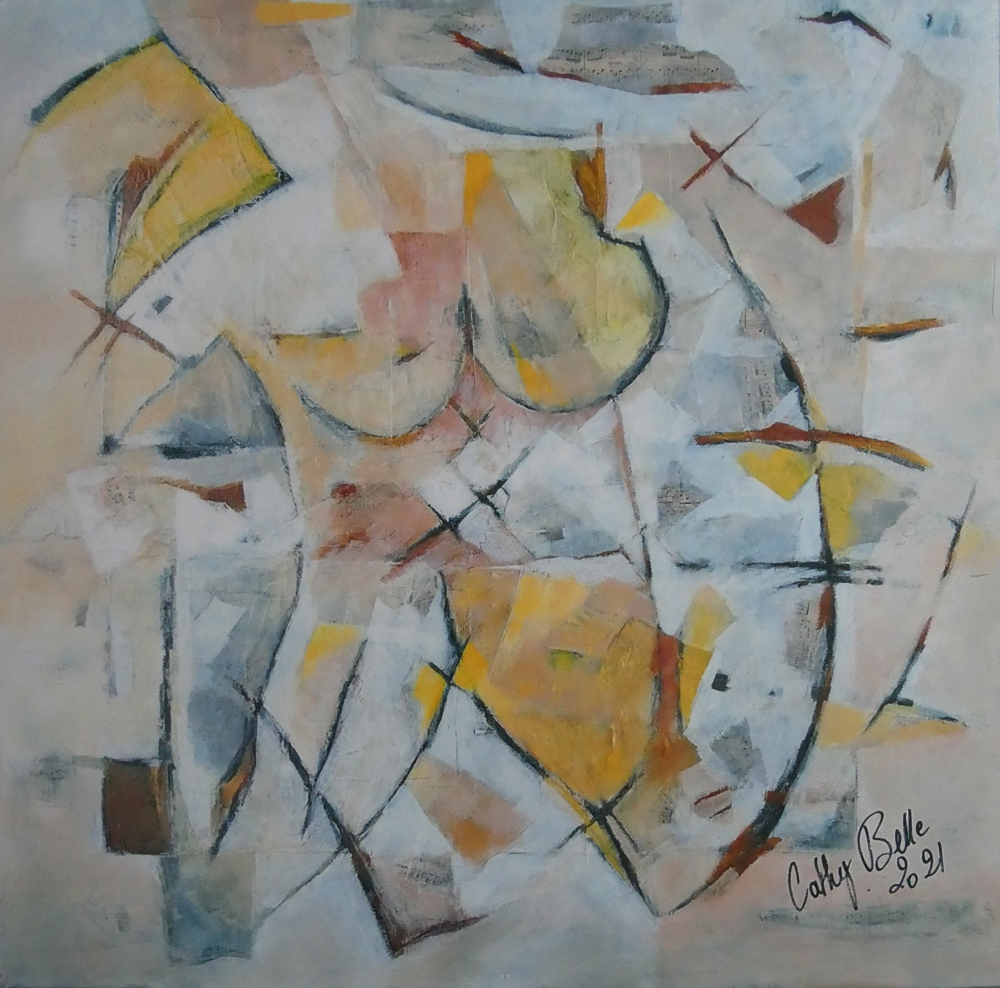

Peinture & matière
Entre abstraction
et souvenirs de fleurs.
Un dialogue entre la couleur, la matière et le vivant.
Découvrir les œuvres
Œuvres choisies
Une sélection de peintures01 / Qui suis-je
Le dessin,
un fil conducteur.

Élève de l’École des beaux-arts de Tours, diplômée en tant que collaboratrice d’architecte en 1977, j’ai toujours accordé une place importante au dessin dans mon parcours de vie.
Après l’apprentissage de diverses techniques — encre, gouache, aquarelle, pastel, huile et acrylique —, j’ai enrichi ma recherche par des ajouts de matière : papier froissé, tissage de raphia et collages.
Ma peinture s’est orientée vers l’abstrait pendant de nombreuses années, avant un retour, ces dernières années, vers un figuratif suggéré.
Au cours d’un été, ma démarche picturale s’est tournée vers l’art floral. En prenant conscience de la résilience de la nature qui m’entoure, je me suis accordé le choix de peindre comme un acte de souvenir de fleurs.
Aujourd’hui, ma démarche artistique est de lier ce figuratif actuel à l’abstraction d’hier.
« L’imagination, la mémoire, la pensée,
le rêve mis en tableau. »Cathy Belle
02 / L’atelier · Saché
Créer.
Partager.
Transmettre.
Le plaisir du geste,
la liberté de la matière.
La peinture se vit aussi dans la rencontre.
Présenter mes créations lors d’expositions et transmettre mes techniques font partie intégrante de mon parcours.
J’anime et crée des ateliers de dessin et de peinture, pour partager le plaisir de la pratique et de la découverte.
03 / Contact
Une œuvre,
une rencontre.
Une œuvre vous touche ?
Une question sur ma démarche ou les ateliers ?
Cathy Belle
29 route de la Basse Chevrière
37190 Saché, France